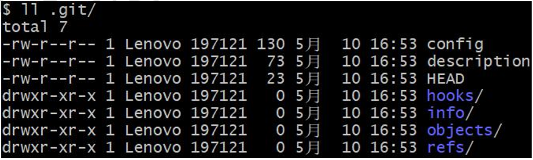

本地库操作
本地库初始化
-
命令： git add
-
效果：
 -
注意：.git 目录中存放的是本地库相关的子目录和文件，不要删除，也不要胡乱修改。
设置签名
-
形式
用户名：tom Email
地址：goodMorning@atguigu.com -
作用： 区分不同开发人员的身份
-
辨析： 这里设置的签名和登录远程库(代码托管中心)的账号、密码没有任何关系。
-
命令
- 项目级别/仓库级别：仅在当前本地库范围内有效
- git config user.name woqi
- git config user.email 2580270217@qq.com
- 信息保存位置：./.git/config 文件

- 系统用户级别：登录当前操作系统的用户范围
- git config --global user.nametom_glb
- git config --global goodMorning_pro@atguigu.com
- 信息保存位置：~/.gitconfig 文件

- 级别优先级
- 就近原则：项目级别优先于系统用户级别，二者都有时采用项目级别的签名
- 如果只有系统用户级别的签名，就以系统用户级别的签名为准
- 二者都没有不允许
- 项目级别/仓库级别：仅在当前本地库范围内有效
基本操作
| 功能 | 命令 | 描述 |
|---|---|---|
| 状态查看 | git status | 查看工作区、暂存区状态 |
| 添加 | git add [filename] | 将工作区的“新建/修改”添加到暂存区，可以通过git rm --cached [filename] 将add的内容撤回 |
| 提交 | git commit -m "commitmessage" [filename] | 将暂存区的内容提交到本地库 |
-
查看历史记录
-
git log

多屏显示控制方式： 空格向下翻页、 b 向上翻页、 q 退出 -
简洁显示1：git log --pretty=oneline

-
简洁显示2：git log --oneline

-
显示，包括显示指针移动次数的：git reflog ， HEAD@{移动到当前版本需要多少步}

-
-
前进后退
- 本质

- 基于索引值操作[推荐]
- git reset --hard [局部索引值]
- 例：git reset --hard a6ace91
- 使用^符号：只能后退
- git reset --hard HEAD^
- 注：一个^表示后退一步，n 个表示后退 n 步
- 使用~符号：只能后退
- git reset --hard HEAD~n
- 注：表示后退 n 步
- reset 命令的三个参数对比
- --soft 参数
- 仅仅在本地库移动 HEAD 指针
- 相当于将commit命令回滚
- --mixed 参数
- 在本地库移动 HEAD 指针，重置暂存区
- 相当于将commit以及add命令进行回滚
- --hard 参数
- 在本地库移动 HEAD 指针，重置暂存区，重置工作区
- 相当于在mixed的基础上，还将工作区的内容进行回滚
- --soft 参数
- 本质
-
删除文件并找回
- 前提：删除前，文件存在时的状态提交到了本地库。
- 操作：git reset--hard [指针位置]
- 删除操作已经提交到本地库：指针位置指向历史记录
- 删除操作尚未提交到本地库：指针位置使用 HEAD
-
比较文件差异
- git diff [文件名]
- 将工作区中的文件和暂存区进行比较
- git diff [本地库中历史版本] [文件名]
- 将工作区中的文件和本地库历史记录比较
- 不带文件名比较多个文件
- git diff [文件名]
分支管理
什么是分支？
在版本控制过程中，使用多条线同时推进多个任务。

分支的好处
- 同时并行推进多个功能开发，提高开发效率
- 各个分支在开发过程中，如果某一个分支开发失败，不会对其他分支有任 何影响。失败的分支删除重新开始即可。
分支操作
- 创建分支
git branch [分支名] - 查看分支
git branch -v - 切换分支
git checkout [分支名] - 合并分支
- 第一步：切换到接受修改的分支（被合并，增加新内容）上
gitcheckout[被合并分支名] - 第二步：执行 merge 命令
gitmerge[有新内容分支名]
- 第一步：切换到接受修改的分支（被合并，增加新内容）上
- 解决冲突
- 冲突的表现 ： 在冲突的文件中

- 冲突的解决
- 第一步：编辑文件，删除特殊符号
- 第二步：把文件修改到满意的程度，保存退出
- 第三步：gitadd[文件名]
- 第四步：gitcommit-m"日志信息"
注意：此时 commit 一定不能带具体文件名
- 冲突的表现 ： 在冲突的文件中